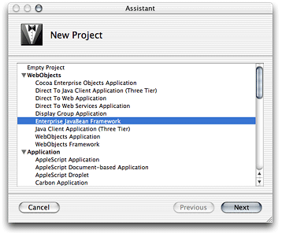
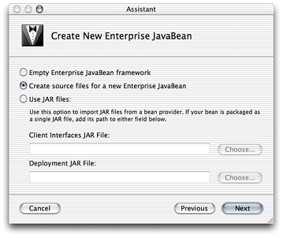
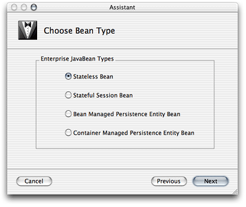
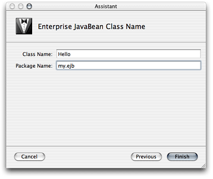
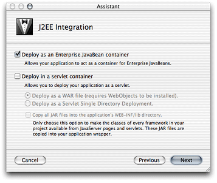

Legacy Document
Important: The information in this document is obsolete and should not be used for new development.
Developing Session Beans
Before developing WebObjects applications that use enterprise beans, you have to create enterprise-bean frameworks. These frameworks contain the JAR files (which include the deployment descriptor files) needed to deploy enterprise beans.
You can develop a bean framework by writing the beans yourself or by using third-party beans (either from Java source and deployment descriptor files or JAR files). Project Builder helps you develop beans by providing you with bean templates that get you started.
In most cases, you save both time and money when you purchase enterprise beans from EJB vendors instead of developing your own. This is because you obtain a solution that has been tested by the solution vendor and other developers. Also remember that you cannot take advantage of Enterprise Object technology in your enterprise beans; for example, you may have to implement primary-key classes, finder methods, primary-key–value generation, and so on in your entity beans. In addition, you have to choose between implementing a bean as an entity bean or a session bean. It’s a bean provider’s job to design an effective and efficient bean solution for you. You can then compare similar solutions from various vendors and purchase the one that most closely addresses your situation.
The following sections show how to develop a stateless session bean for use in a WebObjects application both on Mac OS X and Windows.
This chapter contains the following sections:
“Developing a Session Bean in Mac OS X” explains how to develop a Web application that uses a session bean in Mac OS X.
“method-params element” shows how to develop a Web application that uses a session bean in Windows.
In this section:
Developing a Session Bean in Mac OS X
Developing a Session Bean in Windows
Developing a Session Bean in Mac OS X
This section shows you how you develop a stateless session bean for use in a WebObjects application in Mac OS X.
Creating the Bean Framework
Follow these steps to create a session-bean framework.
Choose File > New Project.
In the New Project pane of the Project Builder Assistant, select Enterprise JavaBean Framework from the list of project types, and click Next.
In the Create New Enterprise Java Bean pane of the Assistant, select “Create source files for a new Enterprise Java Bean.”
In the Choose Bean Type pane, make sure Stateless Bean is selected under Enterprise JavaBean Types.
In the Enterprise JavaBean Class Name pane:
Enter
Helloin the Class Name text field.Enter
my.ejbin the Package Name text field.

Analyzing the Hello Bean’s Files
The Hello project has templates for the home and remote interfaces, as well as for the implementation class of the Hello enterprise bean in the Classes group of the Files list. In addition, the Resources group contains the bean’s deployment descriptor file.
Listing 3-1 shows the template for the home interface of the Hello enterprise bean (HelloHome.java):
Listing 3-1 HelloHome.java file
package my.ejb; |
import javax.ejb.*; |
import java.rmi.RemoteException; |
public interface HelloHome extends EJBHome { |
/** Creation methods **/ |
/* Stateful session beans may have multiple create methods taking |
* different parameters. They must all be reflected in identically |
* named methods in the home interface without the 'ejb' prefix |
* and initial cap. |
* |
* Stateless session bean create methods never have parameters. |
*/ |
public Hello create() throws RemoteException, CreateException; |
} |
Listing 3-2 shows the template for the bean’s remote interface (Hello.java):
Listing 3-2 Hello.java file
package my.ejb; |
import javax.ejb.*; |
import java.rmi.RemoteException; |
import java.rmi.Remote; |
public interface Hello extends EJBObject { |
// |
// Business Logic Interfaces |
// |
// Example: |
// public String hello() throws java.rmi.RemoteException; |
} |
Listing 3-3 shows the template for the bean’s implementation class (HelloBean.java):
Listing 3-3 HelloBean.java file
package my.ejb; |
import javax.ejb.*; |
public class HelloBean implements SessionBean { |
// |
// Creation methods |
// |
public HelloBean() { |
} |
public void ejbCreate() throws CreateException { |
/* Stateless session bean create methods never have parameters */ |
} |
// |
// SessionBean interface implementation |
// |
private SessionContext _ctx; |
public void setSessionContext(SessionContext ctx) { |
this._ctx = ctx; |
} |
public void ejbPassivate() { |
/* does not apply to stateless session beans */ |
} |
public void ejbActivate() { |
/* does not apply to stateless session beans */ |
} |
public void ejbRemove() { |
} |
// |
// Business Logic Implementations |
// |
// Example: |
// public String hello() { return "hello"; } |
} |
Listing 3-4 shows the bean’s deployment descriptor file (ejb-jar.xml):
Listing 3-4 ejb-jar.xml file
<?xml version="1.0" encoding="UTF-8"?> |
<!DOCTYPE ejb-jar PUBLIC '-//Sun Microsystems, Inc.//DTD Enterprise JavaBeans 1.1//EN' 'http://java.sun.com/j2ee/dtds/ejb-jar_1_1.dtd'> |
<ejb-jar> |
<description>deployment descriptor for Hello</description> |
<display-name>Hello</display-name> |
<enterprise-beans> |
<session> |
<description>deployment descriptor for HelloBean</description> |
<display-name>HelloBean</display-name> |
<ejb-name>HelloBean</ejb-name> |
<home>my.ejb.HelloHome</home> |
<remote>my.ejb.Hello</remote> |
<ejb-class>my.ejb.HelloBean</ejb-class> |
<session-type>Stateless</session-type> |
<transaction-type>Container</transaction-type> |
</session> |
</enterprise-beans> |
</ejb-jar> |
In addition to providing you with most of the code needed to deploy a bean, Project Builder also partitions the source code appropriately between two targets: EJB Deployment and EJB Client Interfaces.
Figure 3-1 shows how the bean’s source files are assigned to the EJB Deployment target.
When you view the EJB Client Interfaces target, however, you see that the implementation class and the deployment descriptor files are not assigned to it, as shown in Figure 3-2.
Adding Business Logic to the Bean
Now you’re ready to add the business logic required for the Hello bean to provide a message to its clients.
Edit Hello.java by adding the following method declaration:
public String message() throws RemoteException; |
Edit HelloBean.java by adding the implementation of the message method, which is listed below.
public String message() { |
return "Hello, World."; |
} |
Building the Bean Framework
To build the Hello bean framework, all you have to do is click Build in the toolbar or choose Build > Build. (Make sure that the Hello target is selected in the target pop-up menu before you build.)
After the framework is built, you can find it in the project’s build directory:
Hello/ |
build/ |
Hello.framework |
Creating the Client Application
Now that the Hello bean framework is built, you’re ready to use it in an application. In this case, the client application is an Web application that invokes the bean’s message method and displays its return value using a WOString element.
Create a WebObjects application project.
In the Enable J2EE Integration pane of the Project Builder Assistant, select “Deploy as an Enterprise JavaBean container.”
When you deploy the client application as an EJB container, each application instance has its own EJB container. For more information on internal and external containers, see “Enterprise JavaBeans in WebObjects.”
This example doesn’t require the use of any data-store adaptors, so make sure no adaptors are selected in the Choose EOAdaptors pane.
You need to select a data-store adaptor only when you plan to use enterprise objects in your application. Entity beans that use bean-managed persistence (BMP) are responsible for interfacing with the necessary data stores. For entity beans that use container-managed persistence (CMP), the bean container has this responsibility. The Hello_Client application does not use enterprise objects.
Add the Hello framework to the project.
In the Choose Frameworks pane of the Assistant, click Add.
Select
Hello.frameworkin the build folder of the Hello project folder, and click Choose.
Figure 3-3 highlights Hello.framework in the Hello_Client project.
Adding Business Logic to the Client Application
You have generated an application that, when run, instantiates its own EJB container. This container behaves like a standard EJB container. To access bean instances, you use standard EJB methods.
Modify Session.java
Now, edit Session.java so that each new session creates a Hello bean proxy that your components can access.
First, add these import statements:
import my.ejb.Hello; |
import my.ejb.HelloHome; |
import java.rmi.RemoteException; |
import java.util.Properties; |
import javax.ejb.CreateException; |
import javax.naming.Context; |
import javax.naming.InitialContext; |
import javax.naming.NamingException; |
import javax.rmi.PortableRemoteObject; |
Now, add two instance variables: one to hold a Hello bean instance and another to hold a Hello home-interface object.
// Holds a Hello bean instance. |
protected Hello hello; |
// Holds the Hello bean’s home interface. |
private HelloHome _helloHome = null; |
Modify the Session constructor so that it looks like this
public Session() { |
super(); |
// Instantiate a Hello bean object. |
try { |
hello = helloHome().create(); |
} |
catch (RemoteException re) { |
re.printStackTrace(); |
} |
catch (CreateException ce) { |
ce.printStackTrace(); |
} |
} |
Finally, add the following method:
/** |
* Obtains Hello bean’s home interface. |
* @return Hello bean’s home interface. |
*/ |
public HelloHome helloHome() { |
if (_helloHome == null) { |
try { |
Context jndiContext = new InitialContext(); |
_helloHome = (HelloHome)PortableRemoteObject.narrow(jndiContext.lookup("HelloBean"), HelloHome.class); |
} |
catch (NamingException ne) { |
ne.printStackTrace(); |
} |
} |
return _helloHome; |
} |
Modify Main.wo
Open Main.wo in WebObjects Builder by double-clicking Main.wo, which is located under the Main subgroup of the Web Components group in the Files list.
Add a String key called greeting to Main.wo through the Edit Source pop-up menu.
Add a WOString element to the component, and bind it to the greeting key.
Modify Main.java
When a Main page is about to be displayed, the Main object needs to invoke the message method of its Hello bean proxy to obtain the bean’s greeting and store the value returned in its greeting instance variable. When the WOString element is rendered on the page, its value binding provides the text to be displayed; in this case, the value comes from greeting in the Main object.
Add the following import statements to Main.java:
import my.ejb.Hello; |
import java.rmi.RemoteException; |
Edit the Main constructor so that it looks like this
public Main(WOContext context) { |
super(context); |
Session session = (Session)session(); |
try { |
greeting = session.hello.message(); |
} |
catch (RemoteException re) { |
re.printStackTrace(); |
} |
} |
Configuring the Container
This simple session bean project doesn’t make use of bean persistence. Therefore, it requires no container configuration. The text you need to delete from the TransactionManagerConfiguration.xml file (Listing 3-5) starts at the line numbered 1 and ends at the line numbered 2 in (everything between the <resources> tag and the </resources> tag, and the tags themselves). See “Transaction Manager Configuration ” for more information.
Listing 3-5 TransactionManagerConfiguration.xml file of the Hello_Client project with container-configuration information
<domain> |
<name>default</name> |
<resources>// 1 |
<dataSource> |
<name>DefaultDatabase</name> |
<class>tyrex.resource.jdbc.xa.EnabledDataSource</class> |
<!-- Path to the database-driver JAR File if not in the extensions directory--> |
<jar>file:/FAKEPATHNAME</jar> |
<config> |
<driverName>jdbc:oracle:thin:@HOSTNAME:PORTNAME:DATABASENAME</driverName> |
<driverClassName>oracle.jdbc.OracleDriver</driverClassName> |
<user>ejb</user> |
<password>ejb</password> |
<!-- Transaction timeout in seconds. --> |
<transactionTimeout>60</transactionTimeout> |
<!-- Specifies the JDBC transaction isolation attribute. --> |
<isolationLevel>Serializable</isolationLevel> |
</config> |
<limits> |
<maximum>100</maximum> |
<minimum>10</minimum> |
<initial>10</initial> |
<maxRetain>300</maxRetain> |
<timeout>50</timeout> |
</limits> |
</dataSource> |
</resources>// 2 |
</domain> |
After removing the irrelevant information, the TransactionManagerConfiguration.xml file should look like Listing 3-6:
Listing 3-6 TransactionManagerConfiguration.xml file of the Hello_Client project without container-configuration information
<domain> |
<name>default</name> |
</domain> |
Running the Hello_Client Application
After you build and run the application, you should see a Web page similar to the one in Figure 3-4 in your Web browser.
Developing a Session Bean in Windows
This section shows how to develop a stateless session bean for use in a WebObjects application in Windows.
Creating the Bean Framework
Follow these steps to create a session-bean framework.
Choose Project > New.
Choose Java WebObjects EJB Framework from the Project Type pop-up menu in the New Project dialog, and click Browse.
Select a path for your project, name it
Hello, and click Save.In the Specify Enterprise JavaBeans pane of the EJB Framework Wizard, select “Create source files for a new Enterprise Java Bean” and click Next.
Make sure that Stateless Session Bean is selected in the Chose Enterprise JavaBeans Type pane of the wizard and click Next.
In the Create New Enterprise JavaBeans class pane:
Enter
Helloin the Class Name text field.Enter
my.ejbin the Package Name text field.Click Finish.
Adding Business Logic to the Bean
Now you’re ready to add the business logic required for the Hello bean to provide a message to its clients.
Edit Hello.java by adding the following code (the file is located in the Classes bucket):
public String message() throws RemoteException; |
Edit HelloBean.java by adding the implementation of the message method, which is listed below (the file is located in the Classes bucket of the EJBServer subproject).
public String message() { |
return "Hello, World."; |
} |
Building the Framework
To build the Hello framework, click the Build button or choose Tools > Project Build > Build.
After the framework is built, you find it in the project’s directory:
Hello/ |
Hello.framework |
Creating the Client Application Project
Now that the Hello framework is built, you’re ready to use it in an application. In this case, the client application is a Web application that invokes the bean’s message method and displays its return value using a WOString element.
Create a Java WebObjects Application project and name it
Hello_Client.Choose None in the “Choose type of assistance in your Java project” pane of the WebObjects Application Wizard.
Choose “Deploy as an EJB Container” in the Enable J2EE Integration pane.
In the Choose EOAdaptors pane, click Select None, and then click Finish.
Adding the Hello Bean Framework to the Hello_Client Project
You need to add the Hello bean framework to the Hello_Client project in order to use the services provided by the Hello enterprise bean—mainly providing a greeting. To accomplish that, follow these steps:
Select the Frameworks bucket and choose Project > Add Files.
Navigate to the Hello project directory, select
Hello.framework, and click Open.Click Add in the search order dialog.
Creating the Container Configuration Files
To create the configuration files that the client application needs to interact with its environment, you need to run an application named OpenEJBTool, whose launch script is located in /Apple/Library/WebObjects/JavaApplications/OpenEIBTool.woa.
Using the Bourne shell, execute the following commands:
cd /Apple/Library/WebObjects/JavaApplications/OpenEJBTool.woa |
./OpenEJBTool.cmd -o c:/<Hello_Client_path> |
c:/<Hello_path>Hello.framework |
When the tool is finished, you need to add the configuration files it generated (OpenEJBConfiguration.xml and TransactionManagerConfiguration.xml) to the Resources bucket of the Hello_Client project.
Note: You have to run OpenEJBTool manually every time you add bean frameworks to your project or when the deployment descriptor file in any of the bean frameworks your project uses changes.
Adding Business Logic to the Client Application
You have generated a WebObjects application that, when run, instantiates its own EJB container. This container behaves like a standard EJB container. To access bean instances, you use standard EJB methods.
Modify Session.java
Here you edit Session.java so that each new session creates a Hello proxy and provides access to it to components.
First, add these import statements:
import my.ejb.Hello; |
import my.ejb.HelloHome; |
import java.rmi.RemoteException; |
import java.util.Properties; |
import javax.ejb.CreateException; |
import javax.naming.Context; |
import javax.naming.InitialContext; |
import javax.naming.NamingException; |
import javax.rmi.PortableRemoteObject; |
Now, add two instance variables: one to hold a Hello bean object and another to hold a Hello home-interface object.
// Holds a Hello bean instance. |
protected Hello hello; |
// Holds a Hello bean home-interface object. |
private HelloHome _helloHome; |
Modify the Session constructor so that it looks like this:
public Session() { |
super(); |
// Instantiate a HelloBean object. |
try { |
hello = helloHome().create(); |
} catch (RemoteException re) { |
re.printStackTrace(); |
} catch (CreateException ce) { |
ce.printStackTrace(); |
} |
} |
Finally, add the following method:
/** |
* Obtains HelloBean’s home interface. |
* @return HelloBean’s home interface. |
*/ |
public HelloHome helloHome() { |
if (_helloHome == null) { |
try { |
Context jndiContext = new InitialContext(); |
_helloHome = (HelloHome)PortableRemoteObject.narrow(jndiContext.lookup("HelloBean"), HelloHome.class); |
} catch (NamingException ne) { |
ne.printStackTrace(); |
} |
} |
return _helloHome; |
} |
Modify Main.wo
Open Main.wo in WebObjects Builder by double-clicking Main.wo, which is located under the Web Components bucket.
Add a String key called greeting to Main.wo through the Edit Source pop-up menu.
Add a WOString element to the component, and bind it to the greeting key.
Modify Main.java
When a Main page is about to be displayed, the Main object needs to invoke the message method of its Hello bean proxy to obtain the bean’s greeting and store the value returned in its greeting instance variable. When the WOString element is rendered on the page, its value binding provides the text to be displayed; in this case, the value comes from greeting in the Main object.
Add the following import statements to Main.java:
import com.my.ejb.Hello; |
import java.rmi.RemoteException; |
Edit the Main constructor so that it looks like this:
public Main(WOContext context) { |
super(context); |
Session session = (Session)session(); |
try { |
greeting = session.hello.message(); |
} catch (RemoteException re) { |
re.printStackTrace(); |
} |
} |
Configuring the Container
This simple session-bean project doesn’t make use of bean persistence. Therefore, it requires no database configuration. You need to edit the TransactionManagerConfiguration.xml file of the project to remove extraneous container configuration information, which is everything between the <resources> and </resources> tags, and the tags themselves.
After removing the irrelevant information, the TransactionManagerConfiguration.xml file should look like this
<domain> |
<name>default</name> |
</domain> |
Running the Hello_Client Application
After you build and run the application, you should see a Web browser window with the message “Hello, World.”
© 2001, 2004 Apple Computer, Inc. All Rights Reserved. (Last updated: 2004-10-05)